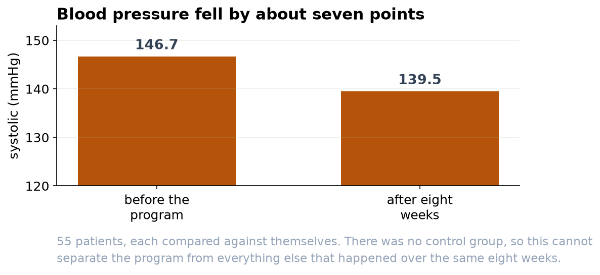

Blood Pressure Fell After the Program, But Read This Before Crediting It
A clear seven-point drop, and the design limitation that stops us calling it cause.
Bottom line
Over the eight weeks, patients' systolic blood pressure dropped by about 7 mmHg on average, from roughly 147 to 140. The drop is large, statistically beyond doubt, and clinically meaningful: a sustained fall of 5 to 10 mmHg measurably lowers cardiovascular risk. What we cannot say from this study alone is that the program caused the drop. Before presenting this as proof the program works, please read the caution below, it changes how the result should be framed.
What we measured
We compared each patient to themselves, before and after, across 55 patients with complete readings. Because the same people are measured twice, we look at each person's change rather than comparing two separate groups, which is both the correct method and a much more sensitive one. We are 95 percent confident the true average drop is between 5.3 and 9.3 mmHg. A rank-based check gave the same answer, so the conclusion does not hinge on any distributional assumption.


One pattern worth following up
The file recorded each participant's age, which the first pass did not use. It turns out to matter: the younger half of the group (under 59) improved by about 10.2 mmHg, the older half by about 4.6. That gap of roughly 5.6 mmHg is about the size of the whole program effect, and it is unlikely to be chance (p = 0.004).
Please treat that as a lead rather than a finding. We went looking for it after seeing the results, and a split chosen that way will often flatter itself. It is a good reason to record age bands prospectively in the next cohort and to decide the comparison in advance. It is not yet a reason to target the program by age.
The caution that matters most
This was a single group measured before and after, with no comparison group. That design shows that blood pressure changed, but it cannot isolate why. At least three ordinary effects would push the numbers down even if the program did nothing. First, regression to the mean: patients were enrolled because their pressure was high, and unusually high readings tend to fall back toward average on their own. Second, natural variation and measurement, season, diet, and a calmer second visit all move blood pressure. Third, the placebo and attention that come with simply being in a program. To credit the program specifically, we would need a control group, patients measured the same way but not enrolled, ideally assigned at random. I recommend framing this result as 'blood pressure improved over the program' rather than 'the program lowered blood pressure,' and planning a controlled follow-up if a causal claim is needed.
How the numbers can be trusted
The raw file was cleaned first. A paired analysis needs both readings, so patients missing a follow-up were set aside (they are not evidence of no change, just incomplete records); we also removed two duplicate rows and three impossible readings (a 0, a 29, and a 300 mmHg), leaving 55 complete pairs. We then confirmed the pattern of changes was regular enough for the standard test, and the answer held up under a second, assumption-free test.